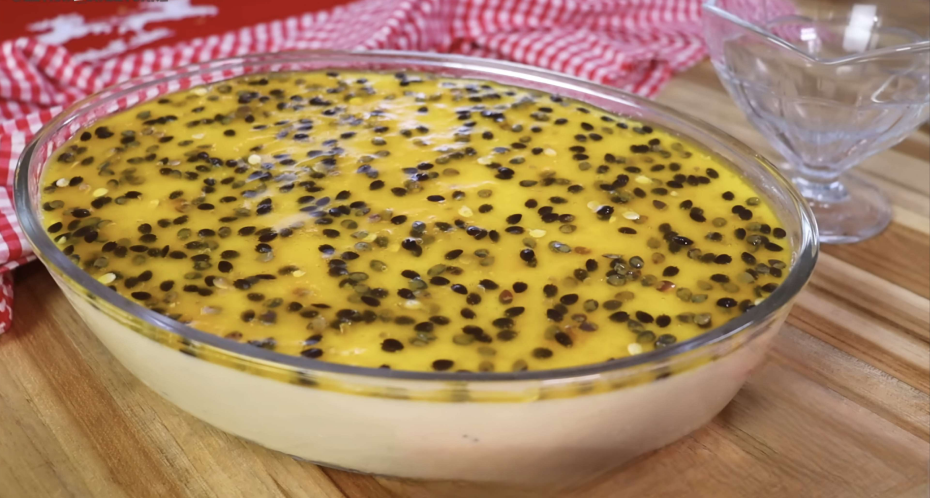

Mousse Cremoso Azedinho Doce
A sobremesa que equilibra perfeitamente o azedinho do maracujá com uma textura aveludada. Rápida e sem fogão!
Modo de Preparo
Esta é uma receita mágica que fica pronta em minutos e só precisa de geladeira. (Baseada em uma receita de 3 ingredientes).
Primeiro Passo: O Básico (Hipótese)
- Separe os ingredientes: 1 lata de leite condensado, 1 lata de creme de leite e 1 medida (da lata) de suco de maracujá concentrado.
- No liquidificador, coloque o leite condensado e o creme de leite. Bata por 30 segundos para misturar.
Segundo Passo: A Mágica
- A Mágica Acontece: Com o liquidificador ligado, adicione o suco de maracujá concentrado aos poucos. Você vai perceber que, assim que o suco (que é ácido) entra em contato com o creme, a mistura começa a engrossar quase instantaneamente. Continue batendo por mais 1 a 2 minutos, até que o mousse fique bem espesso e cremoso.
- Para a Travessa: Despeje o mousse em uma travessa grande de vidro ou distribua em taças individuais. A textura já estará bem firme, mas a geladeira fará o trabalho final.
- Geladeira: Cubra com plástico filme (encostando o plástico no creme para não criar película) e leve à geladeira por, no mínimo, 2 horas antes de servir. Quanto mais gelado, mais firme e refrescante ele fica.
Terceiro Passo: Como fazer a Calda (Opcional)
- Enquanto o mousse gela, misture a polpa de 1 maracujá fresco com 3 colheres de sopa de açúcar em uma panela pequena.
- Leve ao fogo baixo por 2-3 minutos, só até o açúcar dissolver e a calda engrossar levemente.
- Deixe esfriar completamente e despeje sobre o mousse antes de servir.
Prontinho
Agora é só aproveitar essa delícia "azedinho doce"! Esperamos que esta receita traga muito sabor, carinho e momentos deliciosos para a sua Mesa Farta!
Gostou e fez em casa? Adoramos saber! Contate-nos para contar o que achou e nos envie seu trabalho.
Bom apetite!